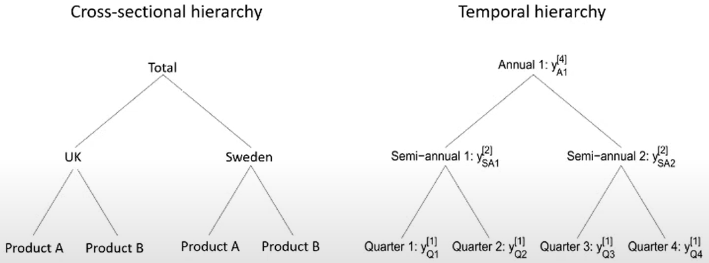
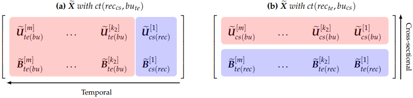
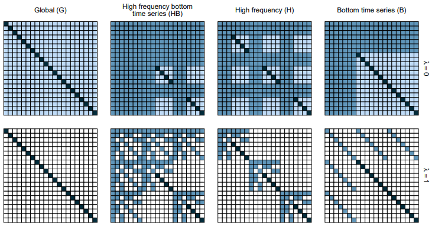
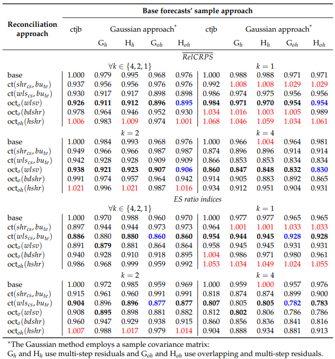
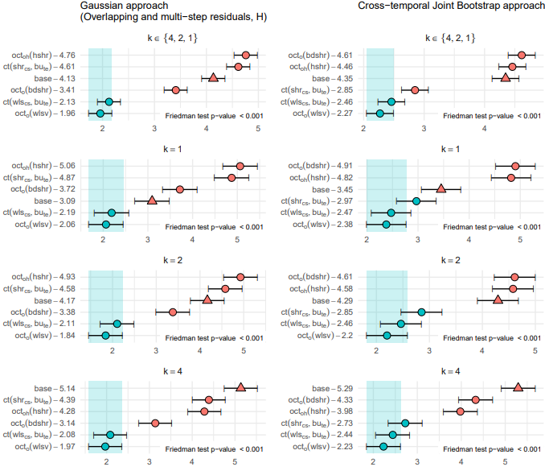
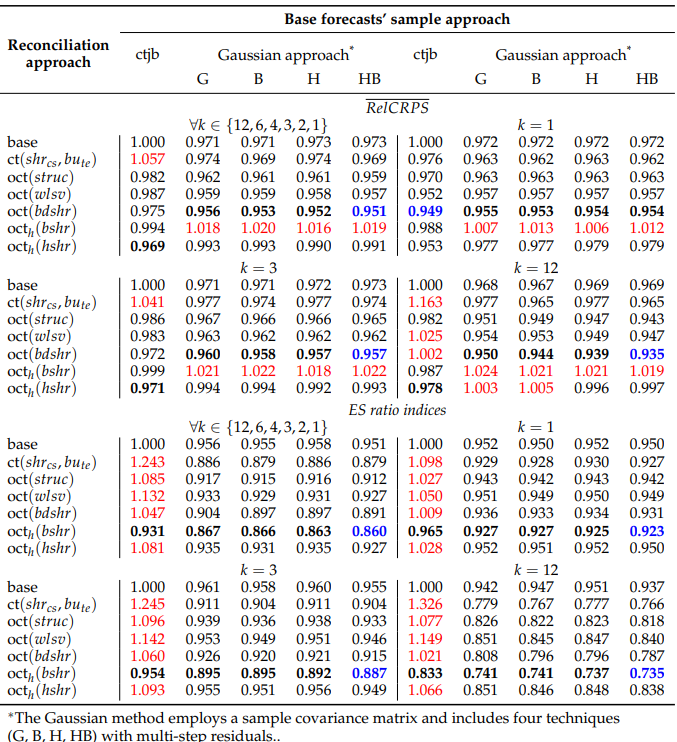
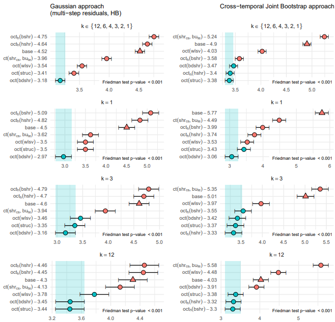

This is the most recent paper from the Hyndman group who have been thinking about how to optimize hierarchical forecasting. Their group has done work on both spatial and temporal hierarchies, for both point and probabilistic forecasting, and this work generalize is that work so that each of the previous implementations are considered special cases. Specifically, here they look at defining probabilistic forecasts with both a spatial (cross-sectional) and temporal hierarchy, calling it a cross-temporal hierarchy (which are coherent).
Introduction
Approach optimizes accuracy of (probabilistic) hierarchical forecasts through their reconciliation-based methodology
Developed by the Hyndman group, who have research interests in hierarchical forecasting
Builds on their previous work for many types of hierarchical forecasting
Spatial (cross-sectional) and temporal hierarchies
Point and probabilistic forecasts
Generalizes different cases to single methodology: cross-temporal probabilistic forecasts
2 dimensional hierarchy that's both cross-sectional and temporal
Single dimension of either is considered special case
Types of hierarchical forecasts
Two main types of hierarchy/hierarchical forecasts: cross-sectional and temporal
Cross-sectional more well-known
Can be combined into 2D hierarchy structure

Hierarchical forecasts (point-only) are said to be coherent when those at lower levels add up those at higher levels
Reconciliation is the process of making hierarchical forecasts coherent
Why coherence/reconciliation
[Image of incoherent forecasts]
Reconciliation: "A post-forecasting process intended to improve the quality of forecasts for system of linearly constrained multiple time series"
Coherence means that forecasts are aligned and consistent
For point forecasting, this can be thought of as the forecasts at lower levels adding up to those at higher levels
Incoherent hierarchical forecasts may predict different futures, forcing modelers to choose a single level to trust
But if reconciliation is performed first, we can combine the information from all levels to obtain a (hopefully) better single forecast that agrees at all levels
Hyndman's group has shown their reconciliation methods lead to higher forecast accuracy
Their methods are unique because they reconcile both dimensions simultaneously instead of sequentially
Methodology overview
Clearly define the hierarchy and aggregate observed data appropriately
Generate (incoherent) base forecasts
Select an estimator Ω^x to use for the base forecasts' covariance matrix
Estimate covariance matrices using residuals
Reconcile forecasts using one of several methods
Parametric framework: Gaussian reconciliation
Through Theorem 3.1 (base forecast samples)
Draw samples x^l from the base forecast distribution N(x^,Ω)
Select an estimator Ω^ct,x to use for cross-temporal covariance matrix
Estimate cross temporal covariance matrix using residuals
Use x~l=Mx^l to obtain reconciled forecast samples
High Frequency Bottom Time Series Forecasts
Obtain the high frequency, bottom time series reconciled forecast distribution
Calculate reconciled forecast samples using the cross-temporal structural matrix
NonParametric framework: Bootstrap reconciliation
Draw samples from all (cross-sectional) series simultaneously from the most temporally aggregated level
Estimate the reconciled forecast's covariance matrix using the base forecast residuals
Notation Basics
yt=[y1,t,...,yi,t,...,yn,t]′ is an n-variate linearly constrained time series observed at the most temporally disaggregated level (bottom-level) with a seasonality of period m at time t
Note, this means that ALL values (bottom and upper levels) in a cross-sectional hierarchy will be included in this vector
This is generally considered the observed time series
xi,t=[xi,t[m],...,xi,t[k],...,xi,t[1]]′ is the representation for a general time series with only one (bottom) cross-sectional level
Here, ALL values in a temporal hierarchy will be included in this vector
Note that xt[1]=yt, meaning that observed time series are always aggregated to create a temporal hierarchy
Aggregation is summarized by [eqn]
Also, each temporal level (associated with its factor k) is represented by its own vector xi,t[k]
The cross-sectional reconciliation approach is obtained assuming m=1 while the temporal one is obtained when n=1 (na=0,nb=1)
So n can be understood as the number of dimensions cross-sectionally while m is related to the temporal dimension (seasonality for the bottom-level compare to the highest aggregation level)
Notation: Temporal Aggregation
A temporal hierarchy for a quarterly series (seasonality m=4, factors k={4,2,1}) with only 1 cross-sectionale component (i = 1) x1,j[4]x1,τ[4] yT,tx1,2τ−1[2]x1,2τ[2] yX,tyY,ty1,4τ−3y1,4τ−2y1,4τ−1y1,4τ (a)(b)
,
Observed time series: {yi,t:i=1;t=1,...,T}
Obtain aggregated values using x1,j[k]=Σt=(j−1)k+1jkyt (series-based notation)
uses time index j=1,...,T/k, which is level-specific (j=t at bottom-most level)
useful when considering each level of the hierarchy individually (e.g. as its own time series)
e.g. First (j=1) semi-annual value x1,1[2]=y1+y2
Universal notation: x1,j[k]=xMk(τ−1)+z[k]
time index τ=1,...,N standardized to be defined by most-aggregate level series
N is the length of the top-most series, Mk=m/k, and z=1,...,Mk (index within τ)
useful when considering temporal hierarchy structure as a whole
Notation: Big Picture
Different notation used to denote same/similar aspects for cross-sectional and temporal dimensions so that they may be combined for cross-temporal case
But the same principles/equations hold for both one-dimensional cases
{We'll go through the simpler cases first, then the combined cross-temporal case, which will then be the lens through which we examine the full methodology}
Cross-sectional has single matrix for upper-level series while temporal has individual vectors for each upper-level series
Cross-sectional assumes series observed at each level while temporal assumes only bottom-most is observed and the hierarchy must be created from the bottom-level series
Each cross-sectional ELEMENT in the hierarchy is considered its own series while each temporal LEVEL is considered its own series
Notation: Equations (for Cross-Sectional and Temporal Cases)
A simple 2-level cross-sectional hierarchy for n=3 time series with na=1 and nb=2 ytxi,τ[4] utyT,txi,2τ−1[2]xi,2τ[2] btyX,tyY,tyi,4τ−3yi,4τ−2yi,4τ−1yi,4τ
Aggregation matrix Acs(na×nb) connects upper and lower level time series ut=Acsbt
Temporal Ate has a specific matrix of expressions ([1kpIm/(kp−1)⊗1kp−1⋯Im/k2⊗1k2]′)
Generally no reason for upper to be restricted to simple sums of bottom, so Acs∈Rnanb
Zero constraints matrix C=[Ina−Acs], with dimensions (na×n)
Constraints equation Cyt=0(na×1) (equality to 0-vector implies coherence, i.e. upper - sum(bottom) = 0)
Structural matrix Scs=[AcsInb]′ with dimensions (n×nb)
Structural representation: yt=Scsbt
Notation: Cross-Temporal Case
We combine notation for both of the single-dimensional cases
Stack series cross-sectionally into [n×(m+k∗)] matrix Xτ
Rows and columns represent cross-sectional and temporal dimensions of Xτ respectively: Xτ=[x1,τ′⋯xi,τ′⋯xn,τ′]′=[Uτ[kp]Bτ[kp]⋯⋯Uτ[k]Bτ[k]⋯⋯Uτ[1]Bτ[1]] =x1,τ[4]x2,τ[4]x3,τ[4]x1,2τ−1[2]x2,2τ−1[2]x3,2τ−1[2]x1,2τ[2]x2,2τ[2]x3,2τ[2]y1,4τ−3y2,4τ−3y3,4τ−3y1,4τ−2y2,4τ−2y3,4τ−2y1,4τ−1y2,4τ−1y3,4τ−1y1,4τy2,4τy3,4τ
where for any fixed k, Uτ[k] is the (na×Nk) matrix grouping the upper time series and Bτ[k] is the (nb×Nk) matrix grouping the bottom time series
Vector version xτ=vec(Xτ)=[x1,τ′,⋯,xi,τ′,⋯,xn,τ′]′ (append rows of original matrix into a vector)
NO aggregation matrix Acs
Zero constraints matrix Cct=[C∗In⊗Cte]′ (NOT the same as 1D cases)
Constraints equation Cctxt=0[(nam+nk∗)×1] (similar to 1D cases), also
Cross-sectional component: CcsXτ=0na×(m+k∗)
Temporal component: Cte∗Xτ′=0k∗×n
Structural matrix Sct=Scs⊗Ste, with dimensions [n(k∗+m)×nbm] (NOT the same as 1D cases)
Structural representation: xτ=Sctbτ[1]=s(bτ[1]) (similar to 1D cases), where bτ[1]=vec(Bτ[1])
s : Rnbm→Rn(m+k∗) is the operator describing the pre-multiplication by Sct
xτ lies in an (nbm)-dimensional subspace sct of Rn(k∗+m), which we refer to as the cross-temporal coherent subspace, spanned by the columns of Sct
The aggregated observations are coherent because this is assumed cross-sectionally and we create the temporal hierarchy from the bottom up
Optimal Point Forecast Reconciliation (Cross-Temporal) pt1
Define (incoherent) base forecasts similarly to cross-temporal aggregated observations:
For h=1,⋯,H, let X^h=x^1,h′⋮x^n,h′=[U^h[m]B^h[m]⋯⋯U^h[k]B^h[k]⋯⋯U^h[1]B^h[1]], be the h-step ahead base forecasts, where
U^h[k] is the (na×Mk) matrix grouping the upper time series,
B^h[k] is the (nb×Mk) matrix grouping the bottom time series for a given temporal aggregation order k, and
H is the forecast horizon for the most temporarily aggregated time series
Since X^τ contains incoherent forecasts, the constraints equation doesn't hold Cctx^t=0[(nam+nk∗)×1]
Optimal Point Forecast Reconciliation (Cross-Temporal) pt2
Transform base forecasts x^h for a given horizon h=1,⋯,H using mapping ψ:Rn(m+k∗)→s to obtain reconciled forecasts x~h=ψ(x^h)=Mx^h≡(s∘g)(x^h)=SctGx^h where
M=In(m+k∗)−ΩctCct′(CctΩctCct′)−1Cct for a positive definite matrix Ωct
M=SctG for G=(Sct′Ωct−1Sct)−1Sct′Ωct−1
Here we are weighing different elements in the hierarchy (defined by the structural matrix) based on their inverse covariance, i.e. give less weight to elements that tend to vary more
x~h=vec(X~h′)∈s
The minimum variance linear unbiased reconcile forecasts, satisfying the unbiasedness condition E(x~h−xh)=0, has solution(5) when Ωct=Var(x^h−xh)
Note there are many methods to obtain an estimator for this covariance matrix
Cross-temporal bottom-up forecast reconciliation
While optimal cross-temporal reconciliation is preferred, it is computationally costly in 2D, especially for probabilistic forecasts
Instead, we first perform optimal reconciliation along one dimension, then bottom-up on the other (blue = reconciled, pink = bottom-up)

Probabilistic Forecast Reconciliation
The authors make use of probability measures to extend cross-temporal point forecasts reconciliation to the probabilistic case, building on previous equations.
A probability measure defines an experiment and parameters that describe various characteristics of this experiment, more specifically:
all the possible outcomes (the sample space), a subset of events that have occurred or we're interested in (the event space, a type of sigma algebra), and a function that describes the probability of each possible event (the probability function)
However, this math is somewhat complicated and a simpler version, more inline with the point forecasting case outlined previously, can be obtained by using samples instead from these probability measures
Theorem 3.1 (Cross-temporal reconciled samples): Suppose that (x^1,⋯,x^L) is a sample drawn from a (cross-temporal) incoherent probability measure v^. Then (x~1,⋯,x~L) is a sample drawn from the (cross-temporal), reconcile probability measure v~ defined in (7) where x~l=ψ(x^l) and l=1,⋯,L
(L is furthest out horizon, according to the top-most time index, you're interested in forecasting for)
This basically says that a sample from the reconciled distribution can be obtained by reconciling each member of a sample from the in-coherent distribution
This allows for separating the mechanism used to generate base forecast samples from the reconciliation face
Let (Rnbm,FRnbm,v) be a probability space for the bottom-time series bτ[1], where FRnbm is the usual Borel σ-algebra on Rnbm. Then a σ-algebra Fs can then be constructed as the collection of sets s(B) for all B∈FRnbm
Definition 3.1 (Cross-temporal coherent probabilistic forecasts): Given the probability space (Rnbm,FRm,v), we define the coherent probability space as the triple (s,Fs,v˘) satisfying the following property: v˘(s(B))=v(B)∀B∈FRnbm
Definition 3.2 (Cross-temporal probabilistic forecast reconciliation): The reconciled probability measure of v^ with respect to ψ is a probability measure v~ on s with σ-algebra Fs satisfying: v~(A)=v^(ψ−1(A)),∀A∈Fs(7) where
ψ−1(A)=x∈Rn(m+k∗):ψ(x)∈A denotes the pre-image of A (x is the pre-image of A)
The map ψ may be obtained as the composition s∘g, as for the cross-temporal point reconciliation(6)
Probabilistic Forecast Reconciliation (Continued)
There are two options to use the samples method to obtain reconciled probabilistic forecasts
Through a parametric framework, using Gaussian distributions
Through bootstrap sampling
(I could only get the code for the parametric framework to run, so that's what I'll be using)
Generally it's possible to obtain reconciled probabilistic forecasts analytically for some parametric distributions
We choose the multivariate normal due to some desirable properties and its ubiquity
Begin with base forecasts with distribution N(x^,Ω) where x^ is the mean vector and Ω is the covariance matrix of the base forecasts
Then the reconciled forecasts have distribution N(x~,Ω~) where x~=Mx^ and Ω~=MΩM′,(8) where M is the projection matrix defined in (5)
The authors also note that if it's assumed that Ω=Ωct, then the co-variance matrix above simplifies to Ω~=MΩct
However, we don't know the covariance matrix in practice, and it is difficult to estimate in the two-dimensional cross-temporal case, so we either
Utilize the properties of elliptical distributions to simulate from the high frequency bottom time series, then calculate a simulation of the full reconciled distribution using the Sct matrix OR
Use Theorem 3.1 to obtain reconciled forecast samples from base forecast samples, which avoids the need to calculate the co-variance matrix for the reconciled forecast distribution
Use theorem 3.1 to transform transform base forecasts samples into reconciled ones
Use high frequency bottom time series of reconciled distribution to calculate reconciled forecast (similar to aggregation set-up/results)
Note that Theorem 3.1 is more powerful than the two equations x~=Mx^ and Ω~=MΩM′, as the former generalizes to all vectors x^l NOT just the mean vector (and co-variance matrix that follows)
Analytical expressions for base and reconcile forecast distributions being hard to obtain
Parametric assumptions being restrictive and unrealistic
Cross-temporal joint (block) bootstrap (ctjb): Procedure to generate samples from base forecast distributions that preserve cross-temporal relationships
Draw samples of all series simultaneously from most temporarily aggregated level and using that to determine the corresponding time indices for other levels
Important to accurately reflect underlying data distribution
Easily scalable for large data sets or for improved speed
Let Mi be the model used to calculate the base forecasts and residuals for the ith series (i.e. choose any forecasting model to make the initial base forecasts to be used for bootstrapping)
Assuming H=1, τ is a random draw with replacement from 1,⋯,N and the lth bootstrap incoherent sample is x^i,l[k]=fi(Mi,e^i[k]), where fi(⋅) depends on the fitted model Mi
That is, x^i,l[k] is a sample path simulated for the ith series with error approximated by the corresponding block bootstrapped sample residual e^i[k], the ith row of
m = 4, k = {4, 2, 1} E^1[1]=e^T,1[1]e^X,1[1]e^Y,1[1]e^T,2[1]e^X,2[1]e^Y,2[1]e^T,3[1]e^X,3[1]e^Y,3[1]e^T,4[1]e^X,4[1]e^Y,4[1]⋯E^4[1]=e^T,13[1]e^X,13[1]e^Y,13[1]e^T,14[1]e^X,14[1]e^Y,14[1]e^T,15[1]e^X,15[1]e^Y,15[1]e^T,16[1]e^X,16[1]e^Y,16[1] E^1[4]=e^T,1[4]e^X,1[4]e^Y,1[4]⋯E^4[4]=e^T,13[4]e^X,13[4]e^Y,13[4]
(It seems like the reconciled forecasts are obtained by applying Theorem 3.1 to the bootstrapped samples/residuals)
Example of bootstrap residuals for 3 linearly constrained quarterly time series (same recurring example from Figure 1), color coded by year (most-aggregated level)
Left: individual residual matrices E^[k] for each temporal level k∈K
Right: L total bootstrapped samples (grouped by τ) with replacement, e.g. L = {2, 1, 2, 2, 3, 4, 1, 4}
Cross-temporal co-variance matrix estimation
Natural estimate is empirical sample covariance matrix of base forecasts, but this involves many parameters, especially for the cross-temporal case (r=n(k∗+m)[n(k∗+m)−1]/2)
Common solution of using a shrinkage estimator (like global shrinkage, which shrinks non-diagonal elements to zero) may result in info loss since the co-variance matrix has built-in hierarchical structure
Instead, estimate a smaller (covariance) matrix which can be multiplied by (known) structural matrices to preserve hierarchical structure and improve estimate of covariance matrix Ω~=SctΩhf−btsSct′=(In⊗Ste)Ωhf(In⊗Ste)′=(Scs⊗Im+k∗)Ωbts(Scs⊗Im+k∗)′
3 decompositions, each characterized by well-defined structures (hierarchy types), and smaller covariance matrices
Note that ΩHB=Ωhf−bts, nor are their dimensions the same, as the former are estimates of the reconciled covariance matrix for the ENTIRE hierarchy while the latter are co-variance matrices of SUBSETS of the hierarchy.
Note: hf-bts = High frequency bottom time series shrinkage matrix (HB)
Basically, what these equations are saying is that you can obtain the co-variance for all parts of the reconciled hierarchy by summing up the co-variance from just the bottom levels of the base forecasts hierarchy AS LONG AS it's reasonable to assume that the base forecast errors and base forecasts themselves are approximately coherent. If this is not true, use the hf or bts decomposition.
Apply "Stein-Type Shrinkage" to each of the following matrices by using corresponding empirical base forecasts residuals estimation (obtained from the MinT shrinkage method)
(Estimators make use of the decompositions given on previous slide)
where Ω^I,D=Inbm⊙Ω^j,l={hf−bts,hf,bts} and λ is the shrinkage parameter
These matrices are not full rank (inverses don't exist, though we need them to compute production to the coherent subspace). This is addressed using a ridge regularization of the form Ω^+ωI, where ω is chosen to make the matrix invertible without introducing excessive bias
We can show that the equations on the previous slide are true because M simplifies down to an identity matrix using inverse matrix rules, hence: Ω~=MΩ^HBM=⋯=Sct′Ωhf−btsSct=Ω^HB
Visual insights on co-variance matrices obtainable with shrinkage parameter λ={0,1} for running example of cross-temporal hierarchy (n=3,m=4). These are all estimates of the co-variance matrix for the entire reconciled hierarchy.

black = not modified by shrinkage, light blue = modified by shrinkage, white = shrunk to zero
dark blue = derived directly from hierarchy, not estimated
The covariance matrix can be split into 9, 7x7 squares representing the n=3 cross-sectional dimension. The squares on the diagonal are the variance of the three series, with the remaining six being the covariance between series.
Each 7x7 square contains the temporal aspects of the covariance matrix. Again, the squares on the diagonal represent the variances of the 7 elements in the temporal hierarchy while the off diagonal squares represent the covariances between the 7 elements
For HB, only the variances of the bottom X, Y series for the most disaggregate quarterly time series and covariances between them need to be estimated. With full shrinkage, the covariances are shrunk to zero.
For the other elements which are obtained by the summing matrix, this results in non-zero values for only pairs of elements in which one depends on the other. For example, the year is obtained by summing either 4 quarters or two halves, so the covariance between the year and any given half or quarter is preserved. However, the covariance between half1 and either quarter3 or quarter4 is shrunk to zero. Similarly, the covariance between any two quarters is also shrunk to zero.
Number of parameters needed to be estimated: G>B>H>HB
[smaller_dim(smaller_dim - 1)] / 2
Using HB covariance matrix assumes base error covariance matrix is coherent (valid if base forecasts are approximately coherent, which is expected for any reasonable set of forecasts)
Theorem 4.1 Let Ω^hf−bts be a (nbm×nbm) positive definite matrix. Then, using Ωct=SctΩ^hf−btsSct′ in the reconciliation formulae below is equivalent to using Ωct=In(m+k∗) (ols approach)
x~h=ψ(x^h)=Mx^h≡(s∘g)(x^h)=SctGx^h
In forecast experiments and simulation, we closely analyze these different constructions with dual purpose:
Full co-variance matrix (λ=0) of base forecasts used to obtain base forecast samples of linearly constrained time series under that Gaussianity
Shrinkage versions used as approximations of co-variance matrix for reconciliation (excluding HB, see Theorem 4.1)
This allows better understanding of properties and abilities of each parameterization
Multi-step Residuals
in general these residuals will be auto-correlated except when h=1
We can organize these residuals into various matrices, similar to the base forecasts in Section 2.1 (note those aren't shown in the same granularity) with N total obs for the top-level series
By series, temporal level, horizon (Nk total): ei,h[k]=[ei,h,1[k]ei,h,2[k]...ei,h,Nk[k]]′ with h=1,...,Mk
By series and temporal level (all horizons) Ei[k]=ei,1,1[k]⋮ei,1,Nk−Mk+1[k]ei,2,2[k]⋮ei,2,Nk−Mk+2[k]⋯⋯ei,Mk,Mk[k]⋮ei,Mk,Nk[k].
Simulation study finds that simulating base forecasts from multi-step residuals allows for more accurate estimation of covariance matrix (compared to what??) and that reconciliation further improves forecast accuracy
Similar to (implicitly given) base forecast organization in 2.1 x^i,h[k]=[x^i,h,1[k]x^i,h,2[k]...x^i,h,Nk[k]]′ with h=1,...,H vs ei,h[k]=[ei,h,1[k]ei,h,2[k]...ei,h,Nk[k]]′ with h=1,...,Mk
Gaussian and bootstrap approaches used to construct cross-temporal samples of base forecasts
Parametric approach: Multi-step residuals with different co-variance matrix structures analyzed in 4.1
Non parametric approach: Regular one-step residuals
Reconciled co-variance matrices always closer to true matrix than base forecast matrix for both approaches, no major differences between residual types
Simulating based forecasts from multi-step residuals allows us to estimate a co-variance matrix close to the true one, with reconciliation able to further improve accuracy of estimates
1-step residuals lead to a biased estimate of coherence matrix where some correlation are zeros by definition
Overlapping residuals
Another issue of cross-temporal reconciliation is low number of available residuals, especially for higher orders of temporal aggregation
Possible solution: use residuals calculated using overlapping series by allowing the year to have a varying starting time, e.g. for y=[y1,...,y6] construct x[2,0]=[y1+y2,y3+y4,y5+y6] and x[2,0]=[y2+y3,y4+y5] with different start times
Steps to calculate overlapping residuals:
Fit a model to x[k,0] (i.e., select an appropriate model and estimate the model parameters using the available data) and calculate the residuals
Apply the same model in step 1 to x[k,s] for s=1,⋯,k−1, without re-estimating the parameters and calculate the residuals
Note, this approach assumes the model used in step one is appropriate for all the different series x[k,s]
Some seasonal models won't be appropriate as the seasonal pattern will be shifted for different values of s, though this doesn't affect SARIMA models whose seasonality is defined in terms of lags, which are unaffected by the value of s
Variables
Covariance matrices. Note that Ωct is a positive definite matrix used in reconciling the base forecasts. The minimum variance linear unbiased reconciled forecasts yields the general reconciliation equation (5) when Ωct=Var(x^h−xh), and (sometimes?) it is reasonable to assume that Ω=Ωct.
method
BF true subset
BF est subset
RF true subset
RF approx (full)
G
Ω
Ω^
Ω~
Ω^G
H
Ωhf
Ω^hf
Ω~hf
Ω^H
B
Ωbts
Ω^bts
Ω~bts
Ω^B
HB
Ωhf−bts
Ω^hf−bts
Ω~hf−bts
Ω^HB
Example Methodology
oct(.) is probabilistic reconciliation using samples and theorem 3.1
oct_h(.) is probabilistic reconciliation using the reconciled forecast distribution with its co-variance matrix Ω~, using linked multi-step residuals
oct_o(.) is probabilistic reconciliation using the reconciled forecast distribution with its co-variance matrix Ω~, using overlapping residuals
oct_oh(.) is probabilistic reconciliation using the reconciled forecast distribution with its co-variance matrix Ω~, using overlapping, multi-step residuals
When do we use Theorem 3.1 vs the other Gaussian reconciliation method? Also, why isn't there an example of using the high frequency, bottom time series matrix for the oct method? Is it because that's equivalent to the Ols method, as stated in Theorem 4.1?
Example: Forecasting Australian GDP
dataset: Australian Quarterly National Accounts (QNA), 1984Q4-2018Q1 (n=95)
reconciliation approaches (approximations for Ωct for use in x~l=Mx^l)
Gaussian case: uses sample covariance matrix to estimate Ω~ (and associated Ω) for N(x~,Ω~)
base forecast samples (1000 total) obtained using sample co-variance matrices with G and H parameterization (not possible to identify unique representation for other cases)
Compare results using multi-step residuals w/ and w/o overlapping to measure benefit of overlapping residuals
Probabilistic forecast accuracy evaluated using relative versions of CRPS and energy score (ES): RelCRPSj,s[k]=(Πi=1nCRPSi,j,s[k]/CRPSi,0,0[k])1/n and RelESj,s[k]=ESj,s[k]/ES0,0[k] with reconciliation approach j and base forecast simulation approach s RelCRPSj,s=(Πi=1,⋯,n;k∈KCRPSi,j,s[k]/CRPSi,0,0[k])1/[n(k∗+m)] and RelESj,s=(Πk∈KESj,s[k]/ES0,0[k])1/(k∗+m) with reconciliation approach j and base forecast simulation approach s
Reference approach (j,s=0) is (unreconciled) base forecasts produced by bootstrapping
Continuous Ranked Probability Score (CRPS): Index that considers the single series and provides a marginal evaluation of the approaches
Energy score (ES): CRPS extension to multivariate case, evaluates it forecast accuracy for whole system
Forecasting Australian GDP (Results)

bold: approach better than benchmark
red: worse than benchmark
blue: overall lowest value
Summary of results
Base forecasts: Normal parametric approach >> Non-parametric bootstrap
Likely due to limited number of residuals available for bootstrapping (data not sufficiently explored)
ct(wlscs,bute) and oct(wlsv) show greatest relative gains over benchmark, oct(hshr) shows least
Greatest improvements observe for higher temporal aggregation levels
Forecasting Australian GDP (Results)

Multiple Comparison with the Best (MCB) Nemenyi Test using CRPS to determine if forecasting performances of different techniques are significantly different from one another (intervals of two procedures don't overlap)
Mean rank of each approach printed next to its name on y-axis
Approaches that don't overlap with blue-interval considered significantly worse than the best, ct(wlscs,bute) and oct(wlsv)
Note here one partly bottom up approach is not significantly worse than best-performing optimal approach
Forecasting Australian GDP (Results Summary)
Overlapping residuals almost always lead to greater improvement in both ES and CRPS
Forecasts at the most aggregated level benefit the most from reconciliation
Using one-step overlapping residuals sufficiently improves forecasts if generation of base forecasts sample paths accounts for multi-step structure
Example: Forecasting Australian Tourism Demand
dataset: Australian Tourism Demand, measures nights Australians spent away from home
T=228 monthly observations of Visitor Nights (VN) from 1/1998-12/2016; K={12,4,3,2,1}
Cross-sectional structure: Geography and Purpose of Travel
Purpose of travel: holiday, visiting friends/relatives, business, other
Table 4: Grouped time series for the Australian Tourism Demand dataset
-
GD
PT
Tot
Australia
1
4
5
States
7
28
35
Zones*
21
81
105
Regions
76
304
380
Total
105
420
525
*6 Zones with only one Region are included in Regions (24 nodes not considered); GD = Geographic Division, PT = Purpose of Travel
Example: Forecasting Australian Tourism Demand
Rolling forecast experiment with expanding window: (85 total)
Training sets: 01/1998-12/2008, ..., 01/1998-12/2015
Testing sets (1 year of forecasts): 2009, ..., 2016
Base forecasts for k-step ahead: K={12,6,4,2,1}(aggregate to yearly)
ETS models selected by minimizing AICc criterion fitted to log-transformed data, than back-transformed to produce non-negative forecasts
Final forecasts obtained similarly to those in the previous section using approaches introduced earlier in this paper
The same evaluation metrics CRPS, ES, and MCB Nemenyi test also applied here
Forecasting Australian Tourism Demand (Results)

bold: approach better than benchmark
red: worse than benchmark
blue: overall lowest value
Summary of results
Base forecasts: Normal parametric approach >> Non-parametric bootstrap
Strict truncated (non-zero) Gaussianity assumptions can lead to improved forecasts in terms of CRPS and ES given limited number of residuals (bootstrap approach's downfall)
No big differences in using different co-variance matrix estimates for Gaussian base forecasts
So only using high frequency by time series can be useful to reduce estimated parameters and initial high dimensionality
Partly Bottom-up techniques in Gaussian case >> Benchmark
But not guaranteed improvement greater than starting base forecasts for Gaussian approach (e.g. compare rows 1 and 2 of each block), esp for larger k
Overall oct(bdshr) always the best in terms of CRPS+ still competitive in terms of ES (loses to octh(bdshr))
Shrinkage approach octh(hshr) performs well in bootstrap case: competitive with oct(bdshr) at k=1,2 and is able to improve for k≥3
Note: oct(bdshr) (which doesn't use residuals) is competitive by consistently improving upon base forecasts for both metrics
Forecasting Australian Tourism Demand (Results)

Multiple Comparison with the Best (MCB) Nemenyi Test using CRPS to determine if forecasting performances of different techniques are significantly different from one another (intervals of two procedures don't overlap)
Mean rank of each approach printed next to its name on y-axis
Approaches that don't overlap with blue-interval considered significantly worse than the best, ct(wlscs,bute) and oct(wlsv)
Note here one partly bottom up approach is not significantly worse than best-performing optimal approach
Partly Bottom of Procedure >> Monthly based forecasts, but optimal cross-temporal procedures ALWAYS better
Bootstrap oct(bdshr), oct(hshr), oct(struc) almost always in best approach group
Gaussian oct(wlsv), oct(struc), oct(bdshr) always significantly better than base forecasts and equally good for k>2 (monthly oct(bdshr) always significantly better than all others)
Forecasting Australian Tourism Demand (Results Summary)
Overlapping residuals almost always lead to greater improvement in both ES and CRPS
Forecasts at the most aggregated level benefit the most from reconciliation
Using one-step overlapping residuals sufficiently improves forecasts if generation of base forecasts sample paths accounts for multi-step structure
Conclusion
Extend probabilistic reconciliation setting from Panagiotelis (2023) for across sectional case to cross-temporal
Reinterpret and extend theorems and definitions
General notation proposed helps investigate extensions following different probabilistic approaches developed by the Hyndman group
Gaussian and bootstrap approach to simulate base forecasts that accounts for both cross-sectional and temporal dimensions simultaneously
Analyze usage of residuals: one-step residuals failed to capture temporal structure -> multi-step residuals to fully capture cross-temporal relationships
Four alternative forms of co-variance matrices to reduce number of estimated parameters due to a high-dimensionality of cross-temporal setting
Overlapping residuals may reduce high-dimensionality burden by increasing number of residuals available
Both applications show optimal cross-temporal reconciliation significantly improves over base forecasts
Simultaneously exploiting both dimensions in reconciliation provides better results than uni-dimensional reconciliation (partly bottom-up), especially at higher levels of temporal aggregation
especially for tourism application's richer temporal hierarchies, allowing regression-based forecast reconciliation to capture and exploit more features of the data throughout the temporal levels
oct(wlsv) and oct(bdshr) are two best performing approaches for both improving forecast accuracy and computational efficiency (corroborates previous point forecast reconciliation results)
cross-temporal forecast reconciliation important tool to improve accuracy of forecasts while simultaneously ensuring coherency in space and time
Techniques can also be customized to suit specific needs of organization, allowing for an corporation of relevant domain-specific knowledge and expertise, ensuring resulting forecasts are accurate, coherent, and more reliable for decision making process
Generation of base forecasts paths
Gaussian approach (employs a sample covariance matrix to estimate Ω~ for N(x~,Ω~)?)
Global, multi-step residuals Gh (base forecast distribution N(x^,Ω^))
High frequency, multi-step residuals Hh (base forecast distribution N(x^,Ω^hf))
Global, overlapping and multi-step residuals Goh
High frequency, overlapping and multi-step residuals Hoh
Reconciliation approach (approximations for Ωct for use in x~l=Mx^l)
Base (no reconciliation performed)
Cross temporal ct(⋅), partly bottom up starting from cross-sectional reconciled forecasts using the
Shrinkage approach ct(shrcs,bute)
Weighted Least Squares approach ct(wlscs,bute)
Optimal cross-temporal reconciliation oct(⋅), using the
Structural approach oct(struc)
Weighted Least Squares Variance approach with one-step residuals oct(wlsv)
Block diagonal shrunk cross-covariance scaling approach with one-step residuals oct(bdshr)
Optimal cross-temporal reconciliation octh(⋅) (Section 4) using the
High Frequency Shrinkage approach octh(hshr)
Bottom time series Shrinkage approach octh(bshr)
Optimal cross-temporal reconciliation, using overlapping residuals octo(⋅)
Structural approach octo(struc)
Weighted Least Squares Variance approach with overlapping residuals octo(wlsv)
Block diagonal shrunk cross-covariance scaling approach with overlapping residuals octo(bdshr)
Optimal cross-temporal reconciliation, using overlapping and multi-step residuals octoh(⋅)
High Frequency Shrinkage approach octoh(hshr)
Bottom time series Shrinkage approach octoh(bshr)
This is proved by the following: x~h=SctGx^h⇒Sctb~h[1]=SctGx^h⇒b~h[1]=Gx^h⇒b~h[1]=[(Sct′Ωct−1Sct)−1Sct′Ωct−1]x^h b~ols[1]=[(Sct′Sct)−1Sct′]x^h b~hb[1]=[Sct′(SctΩ^hf−btsSct′)−1Sct]−1Sct′(SctΩ^hf−btsSct′)−1x^h
Then, using inverse matrix rules, it can be shown that these two equations are equal by simplifying the latter one
where
M=In(m+k∗)−ΩctCct′(CctΩctCct′)−1Cct for a positive definite matrix Ωct
While we may avoid estimating the reconciled forecasts' co-variance matrix Ω~, we still need to estimate the base forecasts' one Ω
Natural estimate is empirical sample covariance matrix of base forecasts, but this involves many parameters, especially for the cross-temporal case (r=n(k∗+m)[n(k∗+m)−1]/2)
There are several different estimates that may be used
Ω~=MΩM′ where
M=In(m+k∗)−ΩctCct′(CctΩctCct′)−1Cct for a positive definite matrix Ωct
M=SctG for G=(Sct′Ωct−1Sct)−1Sct′Ωct−1
Note: If we assume that Ω=Ωct (see the projection matrices (5) and (6)), then the co-variance matrix (8) simplifies to Ω˜=MΩct
Let (Rnbm,FRnbm,v) be a probability space for the bottom-time series bτ[1], where FRnbm is the usual Borel σ-algebra on Rnbm. Then a σ-algebra Fs can then be constructed as the collection of sets s(B) for all B∈FRnbm
Definition 3.1 (Cross-temporal coherent probabilistic forecasts): Given the probability space (Rnbm,FRm,v), we define the coherent probability space as the triple (s,Fs,v˘) satisfying the following property: v˘(s(B))=v(B)∀B∈FRnbm
Definition 3.2 (Cross-temporal probabilistic forecast reconciliation): The reconciled probability measure of v^ with respect to ψ is a probability measure v~ on s with σ-algebra Fs satisfying: v~(A)=v^(ψ−1(A)),∀A∈Fs(7) where
ψ−1(A)=x∈Rn(m+k∗):ψ(x)∈A denotes the pre-image of A (x is the pre-image of A)
The map ψ may be obtained as the composition s∘g, as for the cross-temporal point reconciliation(6)
That is, x^i,l[k] is a sample path simulated for the ith series with error approximated by the corresponding block bootstrapped sample residual e^i[k], the ith row of
m = 4, k = {4, 2, 1} E^1[1]=e^T,1[1]e^X,1[1]e^Y,1[1]e^T,2[1]e^X,2[1]e^Y,2[1]e^T,3[1]e^X,3[1]e^Y,3[1]e^T,4[1]e^X,4[1]e^Y,4[1]⋯E^4[1]=e^T,13[1]e^X,13[1]e^Y,13[1]e^T,14[1]e^X,14[1]e^Y,14[1]e^T,15[1]e^X,15[1]e^Y,15[1]e^T,16[1]e^X,16[1]e^Y,16[1] E^1[4]=e^T,1[4]e^X,1[4]e^Y,1[4]⋯E^4[4]=e^T,13[4]e^X,13[4]e^Y,13[4]
--
xτ lies in an (nbm)-dimensional subspace sct of Rn(k∗), which we refer to as the cross-temporal coherent subspace, spanned by the columns of Sct
s : Rnbm→Rn(m+k∗) is the operator describing the pre-multiplication by Sct
Definition 2.1: Forecast reconciliation adjusts the base forecast x^h by finding a mapping ψ:Rn(m+k∗)→s, such that x~h=ψ(x^h), where x~h∈s is the vector of reconciled forecasts and the mapping ψ may be defined as a projection onto s
s indicates a coherent subspace spanned by the columns of matrix S B is a vector of dimension nbm, aka the length of xτ
The coherent probability space is
v(A) = u(x), where w(x) E Av(A) = u(x), where w(x) E A
Vector of truth data at time tau x_t lies in the cross-temporal coherent subspace s_{ct} where truth_t = s(bottom_t) = S bottom_t
Vector of reconciled forecasts x_h lies in the "cross-temporal reconciled subspace" s, where rec_h = psi (base_h) = s(g(base_h)) = SG base_h
Probability space for bottom time series (R^{n_b m}, F_{n_b m}, v) is a probability space with a Borel sigma algebra
Coherent probability space for bottom time series (s, F_s, v_cup) has a sigma algebra constructed as the collection of sets s(B) for all B in F_{R}^{n_b m}
A mapping p:Rn−>[0,1] basically tells us that a (probability) function p takes some value on the real number line and spits out a probability
Basically, a probability triple defines an experiment with parameters defining 1) all the possible outcomes (the sample space), 2) a subset of events that have occurred or we're interested in (the event space, a type of sigma algebra), 3) and a function that describes the probability of each possible event (the probability measurer, a type of probability function)
Note that a probability space is a measure space in which the measure of the whole space is equal to one
This means the event space is a sigma algebra on the sample space, since a measure space is composed of (a set X, a sigma algebra A on the set X, a measure on the measurable space (X, A))
We constrain the event space to be a Borel sigma algebra, or the smallest sigma algebra containing all open (or closed) sets [through operations of countable union, countable intersection, and relative complement]
This might ensure all the events can be assigned probabilities
yt=[y1,t,...,yi,t,...,yn,t]′ is an n-variate linearly constrained time series observed at the most temporally disaggregated level (bottom-level) with a seasonality of period m at time t
Note, this means that ALL values (bottom and upper levels) in a cross-sectional hierarchy will be included in this vector
The cross-sectional reconciliation approach is obtained assuming m=1 while the temporal one is obtained when n=1 (na=0,nb=1)
So n can be understood as the number of dimensions cross-sectionally while m is the temporal dimension (seasonality for the bottom-level compare to the highest aggregation level)
Old thief notation
Observed time series: {yt:t=1,...,T}
Observation index j varies at each aggregation level
Observation index i at most aggregate level series
k_p = m = 4, N = 6, T = Nm = 24, K = {4, 2, 1}, k_1 = 1, p = 3; N_k = T/k = 24/1
seasonal period M_k = m / k
x_{i,j}^{[1]} = y_{i,t}
Observed series: $y_{1,1},
Quarterly: k_1 = 1, j = 1, ...24
xi,1[1]=yi,(j−1)k+1=yi,jk=yi,1
...
xi,24[1]=yi,24
Shared elements
Bottom series: A vector of ONLY the bottom-most time series
Upper series: a vector of all upper level time series
Combined series ([upper bottom]')
Aggregation matrix A connects upper and lower level time series (upper = A * bottom); equation does NOT hold for cross-temporal case
For temporal, Ate has a specific matrix of expressions ([1kpIm/(kp−1)⊗1kp−1⋯Im/k2⊗1k2]′)
Generally no reason for upper to be restricted to simple sums of bottom, so A \in R^{upper_dim * lower_dim}
Zero constraints matrix C = [I_{upper_dim} -A], with dimensions (upper_dim x (bottom_dim + upper_dim)) (equation does NOT hold for cross temporal case)
Constraints equation C * combined = 0_{(upper_dim * 1)}
For each dimension: C_{cs} * combined_ct = 0_{upper_dim_cs * combo_dim_te} AND C_{te} * combined_ct' = 0_{upper_dim_te * combo_dim_cs}
Structural matrix S = [A I_{lower_dim}]' (equation does NOT hold for the cross-temporal case)
Structural representation: combined = S * bottom
variable
cross-sectional
temporal
cross-temporal
bottom-level series
bt
yt=xt[1]
xi,τ′=Bτ[k]
bottom-level elements
yi,t for i=na+1,...,n
y1,Mk(τ−1)+z=x1,Mk(τ−1)+z[1]
xi,Mk(τ−1)+z[k] for i=na+1,...n
upper-level series
ut
xt[k]
Ut[k]
upper-level elements
yi,t for i=1,...,na
x1,Mk(τ−1)+z[k]
xi,Mk(τ−1)+z[k] for i=1,...,na
combined series
yt
x1,τ
matrix Xt, vector xt
combined elements
yi,t for i=1,...,n
x1,τ[k]
xi,Mk(τ−1)+z[k] for i=1,...,n
num bottom series
nb
kp=m
[nbm]
num upper series
na
k∗
[nam+nk∗]
total num series
n=nb+na
p
[n(m+k∗)]
Rows and columns represent cross-sectional and temporal dimensions of Xτ respectively: Xτ=x1,τ′x2,τ′x3,τ′=[Uτ′Bτ′] =x1,τ[4]′x2,τ[4]′x3,τ[4]′x1,τ[2]′x2,τ[2]′x3,τ[2]′x1,τ[1]′x2,τ[1]′x3,τ[1]′=[Uτ[4]Bτ[4]Uτ[2]Bτ[2]Uτ[1]Bτ[1]] =x1,τ[4]x2,τ[4]x3,τ[4]x1,2τ−1[2]x2,2τ−1[2]x3,2τ−1[2]x1,2τ[2]x2,2τ[2]x3,2τ[2]y1,4τ−3y2,4τ−3y3,4τ−3y1,4τ−2y2,4τ−2y3,4τ−2y1,4τ−1y2,4τ−1y3,4τ−1y1,4τy2,4τy3,4τ
where for any fixed k, Uτ[k] is the (na×Nk) matrix grouping the upper time series and Bτ[k] is the (nb×Nk) matrix grouping the bottom time series
Rows and columns represent cross-sectional and temporal dimensions of Xτ respectively: Xτ=[x1,τ′⋯xi,τ′⋯xn,τ′]′=[Uτ[kp]Bτ[kp]⋯⋯Uτ[k]Bτ[k]⋯⋯Uτ[1]Bτ[1]] =x1,τ[4]x2,τ[4]x3,τ[4]x1,2τ−1[2]x2,2τ−1[2]x3,2τ−1[2]x1,2τ[2]x2,2τ[2]x3,2τ[2]y1,4τ−3y2,4τ−3y3,4τ−3y1,4τ−2y2,4τ−2y3,4τ−2y1,4τ−1y2,4τ−1y3,4τ−1y1,4τy2,4τy3,4τ
where for any fixed k, Uτ[k] is the (na×Nk) matrix grouping the upper time series and Bτ[k] is the (nb×Nk) matrix grouping the bottom time series